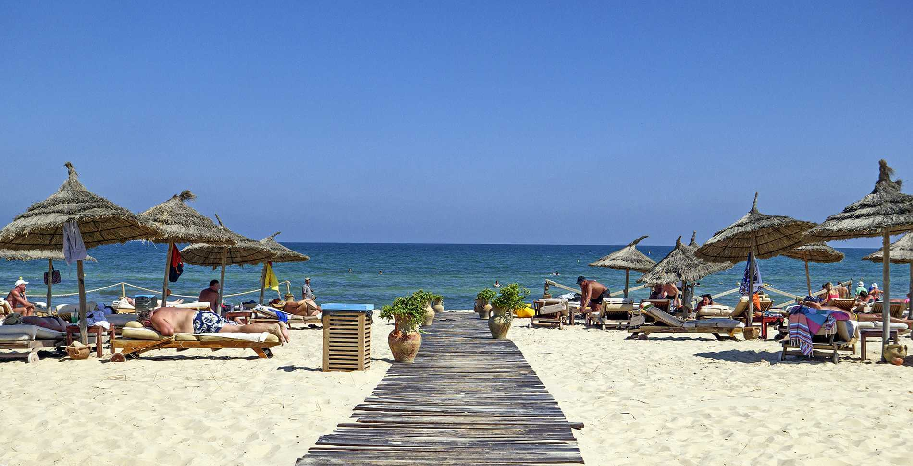
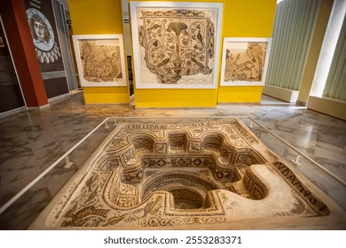
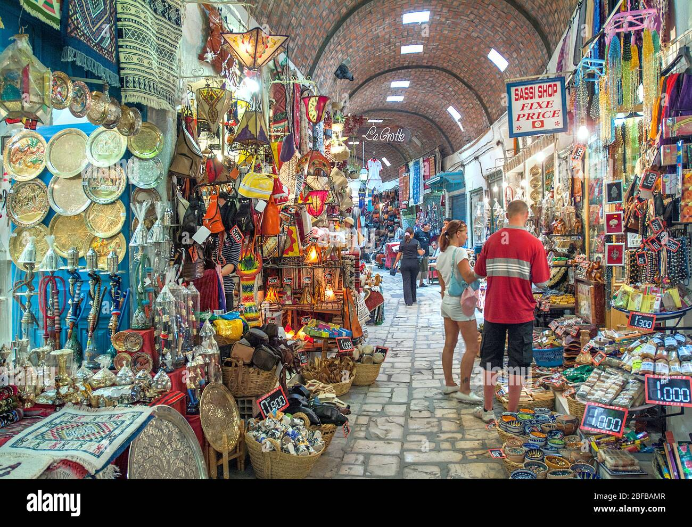
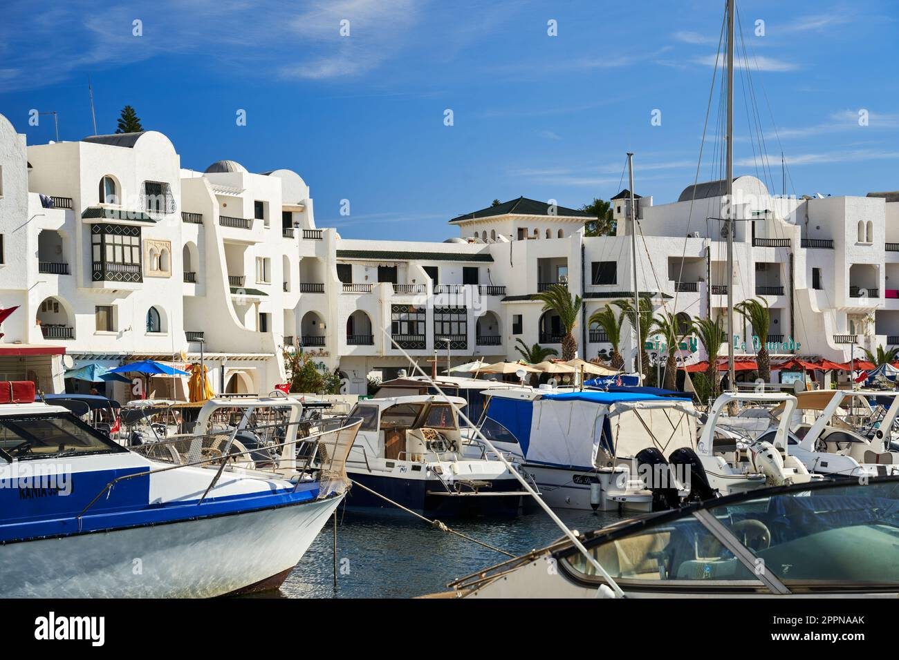
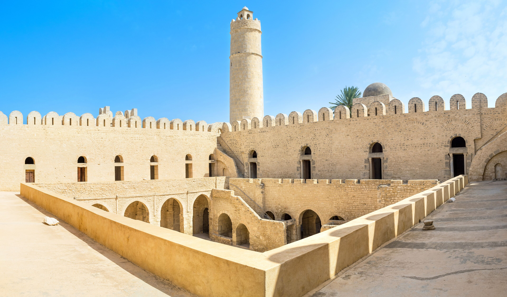
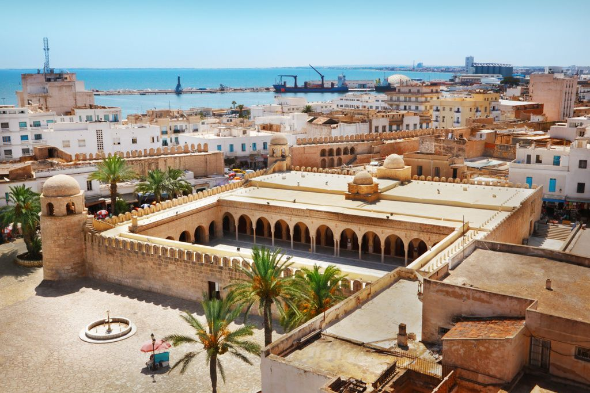
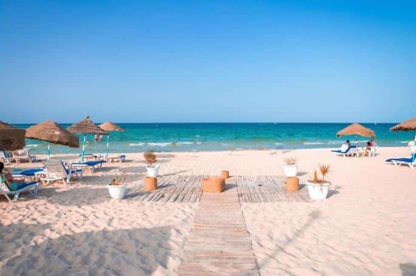

Je vous présente mes diverses photos souvenirs de Tunisie

Photo de la plage de Sousse

Photo du Musée archéologique de Sousse

Photo de la Médina de Sousse

Photo du port el Kantaoui

Photo de la forteresse historique de Sousse "Ribat"

Photo de la Mosquée de Sousse
J'espere que ma galerie de photos vous aura plu. Elle regroupe certains lieux emblématique de la ville fort intéressant à visiter. Je vous les conseil vivement si vous décider de découvrir un jour la ville.

Photo de la plage de Mahdia